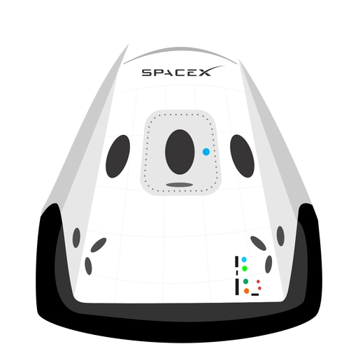

hyperblog;
tu blog de cabecera
aquí inicia la histora de un gran proyecto
y este es parrafo de incio donde vamos a explicar las cosas increibles que se pueden hacer con ramas

los blog son la mejor forma de compartir informacion y tus ideas. Mucho mas que ir a conferencias o salir nr youtube, excepto si eres un rockstar, pero estadisticamente no lo eres... por ahora
parrafo extra!!